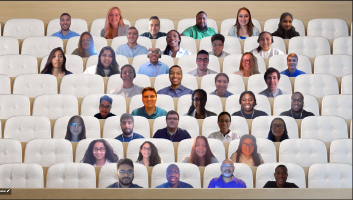
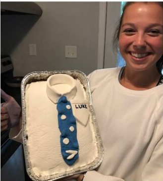
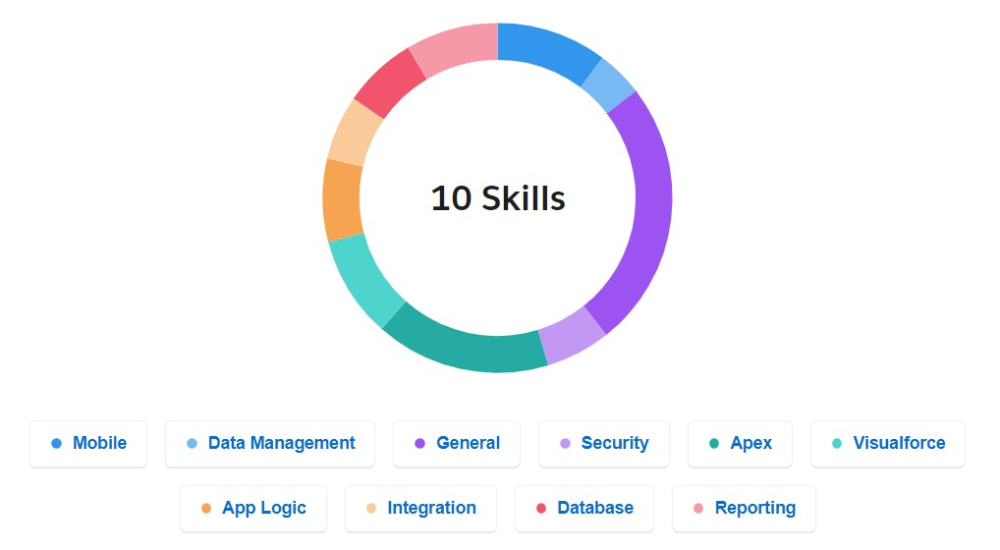
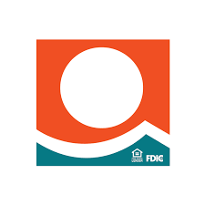

B.S. in Computer Science with a minor in Mathematics
August 2018 - May 2022
Cumulative GPA: 3.87
Introduction to Programming
The first college level CS course I took. I fell in love with CS and became a TA for this course afterwards!
Foundation of Programming
A course focused on object-oriented programming and a deep dive into debugging! This course inspired my sushi project!
Data Structures
I learned about abstract data - lists, stakcs, queues, trees, graphs and more! This class really emphasized the importance of efficient coding - both in time and in space.
Computer Organization
This course covered everything from binary arithmetic to logic gates and circuits to performance measures to solving problems in C and assembly code.
Modern Web Programming
A course that taught me the ins and outs of web programming - both back end and front end. I made this website as final project!
Data Science for Earth Systems
This course introduced me to machine learning and data science specifically within the realm of analyzing Earth systems. For the first time, I worked with real meta-data from sources like NOAA and USGS to answer critical questions and used machine learning to answer them. For my final project, I analyzed flooding patterns in New Orleans!
Data Science in the Business World
explanation and many projects
Introduction to Security Concepts
From learning attacks with emojis representing the attacker to coding attacks and countermeasures in low level languages
Models of Languages and Compuations
This course dove into the theory of computation. I learned all about finite automata, regular languages, pushdown automata, context-free languages, and Turing machines. I mastered the skill of drawing graphical representations of these by end of the semseter.
Algorithms and Analysis
In this course, I learned different techniques of algoritm analysis and problem-solving paradigms.
Beyond Object Oriented Programming
This course challenged a lot of the basics I have learned in Computer Science, going beyond object oriented programming. We visited core computer science questions like the Dining Philsopher Problem and concurrency and evaluated them from a different perspectives.
Computational Photography
explanation
Calculus of Functions of One Variable I & II and of Several Variables
Calculus classes were surely challengely, but boy did they pay off - in every semester after I completed calculus I saw derivatives, integrals, or an important theorem reappear in my other STEM classes.
Discrete Mathematics
I was pleasantly surprised when I discovered math beyond Calculus. This class was particularly interesting as it intersected with many logical Computer Science topics. This was also my first course that transitioned to online learning during the Pandemic - talk about a learning curve!
First Course in Differential Equations
explanation
Linear Algebra for Applications
Taking Linear Algebra during a summer session was an awesome experience because I could focus all my attention to one topic.
Combinatorial Mathematics
This course was phenomial. It was my first course back in person after the Pandemic, and this course focused on the HOW rather than the answer to problems, which I loved.
Introduction to Probability
I took this course during the same semester that I took Data Science in Business World - the intersection of these two courses was perfect timing. I was learning all about probability distributions in my math course and applying them in machine-learning forms to real world scenarios in my Data Science course.
Intoduction to Design and Making
explanation
Introduction to Digital Culture
explanation
Extremism and Visual Persausion
explanation
Women in Science
explanation
Experience
Accenture Technology Analyst Intern
June 2021 - August 2021
As a Summer Analyst in the Technology Development Program, I worked with a data migration and conversion team for a large fin-tech acquisition and merge.
I completed modules in Salesforce and nCino platforms, learning back end development and functionality. Some of the skills I earned in the Salesforce platform can be seen in the pie chart below!
I completed mappings and fixed defects for meta-data in Informatica and analyzed results in SQL server for my project team. I was extremely excited about this as I felt I was contributing value to my team while also learning new skills in a platform I had never used before!
Throughout the summer, I was able to sharpen my communicative, organizational, and management skills through tasks such as creating visuals, timelines, & slide decks, keeping records updated in excel, and participating in daily standups.
Beyond these professional and technical skills I developed during this summer with Accenture, I was also able to grow personally. I partook in small group sessions of interns, book clubs, faith-based groups, and leadership conferences. I even participated in a virtual bake-off with the office team (pictured below)! And lastly, I was able to network with the most inspiring and dedicated employees!




Gulf Coast Bank IT Intern
July 2020 - August 2020
As an IT Intern, I created online forms for a digital transformation project. This included both front end and back end development using PHP, Java, and HTML.
I worked in SQL Server to query data for various bank purposes and requests. I had never worked in SQL Server before, but loved learning this new skill as it is a very important and practical one to have for many industries!
I was able to actively and regularly engage with users of the forms I created for critical feedback, learning and practicing Scrum Agile Project Management.
COMP110 Undergraduate Teaching Assistant
Janurary 2019 - May 2022
As a UTA of 7 semesters, I advised over 500 students in COMP110, the Introductory Computer Science course at UNC, each semester.
I held office hours to facilitate the general understanding of concepts to students in both the CS major and in non-STEM majors and to help students work through specific problem sets.
Some semesters, I attended the course's lectures to answer questions during class and proctor exams.
Other semesters, I wrote worksheet questions and exercises, and helped grade projects and exams.
One of my favorite ways to serve the class was getting to tutor students. This was time setup apart from office hours that allowed students struggling conceptually in the course the chance to catch up and learn at a pace more tailored to their needs.
Another particular effort I loved was being a mentor to younger Undergrad Teaching Assistants who were new to the UTA team. I was able to advise them in being a UTA, as well as general knowledge about the CS major and recruiting.